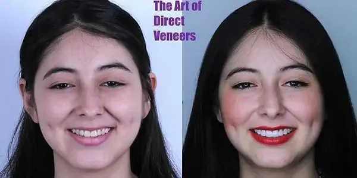
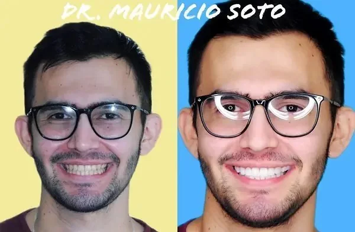

PERSONALISED ASSESSMENT
Porcelain veneers
Explore material, shape and proportion as part of a personalised smile plan.
Orthodontics, veneers and a considered approach to your oral health. Start with Dr. Mauricio Soto and a plan explained around you.


Explore material, shape and proportion as part of a personalised smile plan.

A conversation about your goals, the available approaches and their maintenance.

Planning and communication supported by the digital approaches presented by the practice.
Options are discussed after assessment. This website does not determine suitability for treatment.
Published photographs help introduce the practice’s work. Each case requires its own clinical assessment.
Dr. Mauricio SotoDr. Mauricio Soto brings together orthodontics and aesthetic dentistry in his Bucaramanga practice. The conversation considers your oral health, expectations and the options appropriate to your case.
A conversation from abroad. A clinical plan confirmed in person. A coordinated next step.
Contact the practice about your goals, language and country of residence.
The professional explains suitable options, required visits and follow-up.
Coordinate dates and care arrangements with the team before booking travel.
Clarify the follow-up plan and who to contact after returning home.
Ask the practice about remote assessment, language and the next steps for your circumstances. The demonstration calendar is not connected to the clinic.
The clinician determines the visits and follow-up after assessing your case. Confirm this before committing to travel.
The clinical team will explain what information or records it needs through its official channels. Do not send clinical records through this concept website.
Demonstration only. No real appointment is reserved.